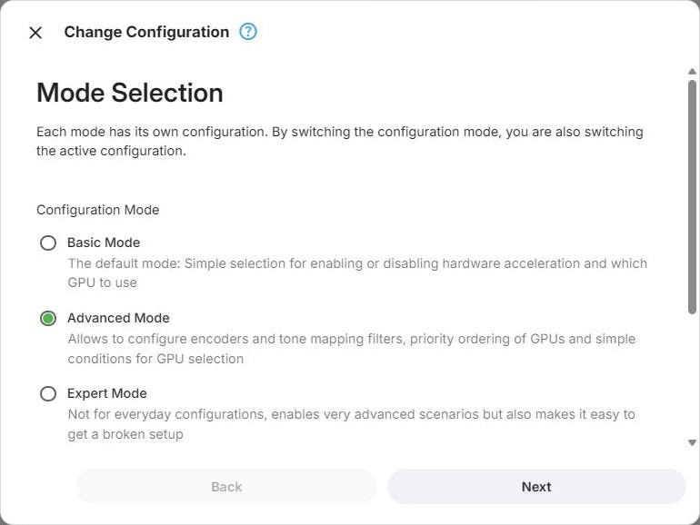
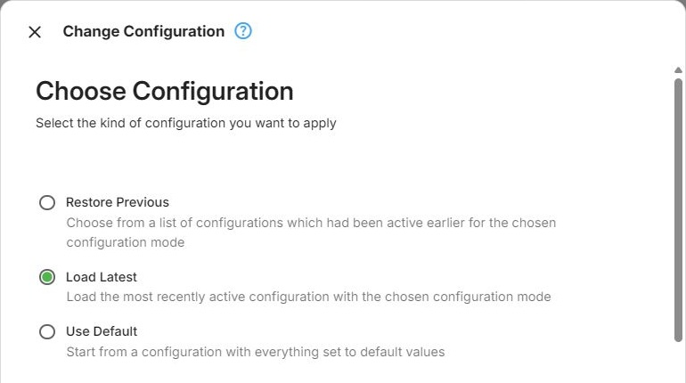
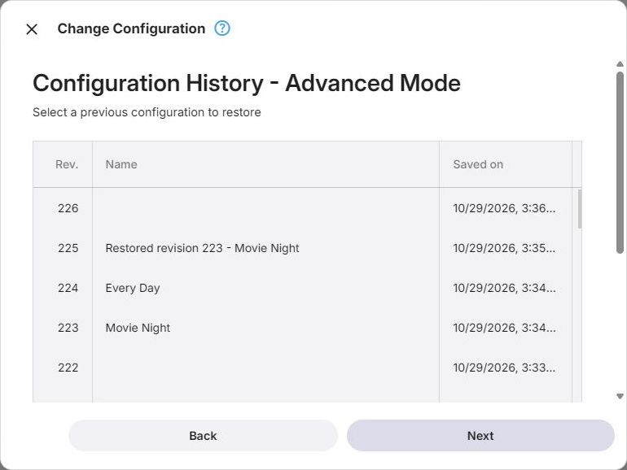
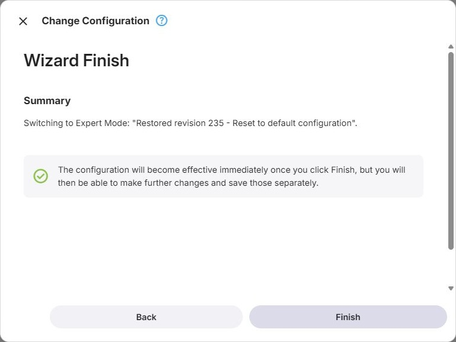
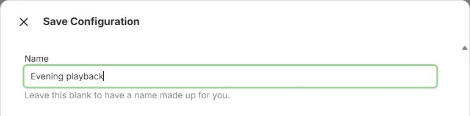

Configuration
Configuration Modes
There are three configuration modes, and they differ in how much they let you decide:
- Basic Mode - the default mode: simple selection for enabling or disabling hardware acceleration and which GPU to use
- Advanced Mode - allows to configure encoders and tone mapping filters, priority ordering of GPUs and simple conditions for GPU selection
- Expert Mode - not for everyday configurations, enables very advanced scenarios but also makes it easy to get a broken setup
Only one mode's configuration is in effect at a time. Saved Advanced and Expert configurations are kept separately, so you can switch back to either mode and load its latest configuration. Basic Mode is the exception: switching back to it starts with Auto, rather than restoring an earlier Off or specific GPU selection.
Change Configuration Wizard
The Change Configuration Wizard is launched from the Change Configuration button. It serves several purposes at once: switching between the configuration modes, resetting to a default configuration, and going back to a configuration that was active earlier.
Choosing a Mode
The first page asks which mode to switch to. In Advanced and Expert Mode, choosing the mode you are already in is how you reset or roll back within that mode. Basic Mode cannot be selected again while it is already active.

Choosing What to Start From
The second page asks where the new configuration should come from:
- Restore Previous - choose from a list of configurations which had been active earlier for the chosen configuration mode. Available once that mode has more than one configuration in its history
- Load Latest - load the most recently active configuration for the chosen mode. Available once that mode has any history at all
- Use Default - start from a configuration with everything set to default values. Always available
Whichever is the most useful is preselected: the latest configuration where one exists, otherwise the default.
This page is skipped for Basic Mode, which keeps no history and therefore always starts from its default.

Restoring an Earlier Configuration
Choosing Restore Previous shows that mode's history, one row per saved configuration, with its revision number, its name if it was given one, when it was saved and by whom. Selecting a row restores that configuration.

Confirming Expert Mode
Switching to Expert Mode for the first time asks for confirmation, because an incorrect Expert configuration may degrade or break transcoding, and testing it is your responsibility.
Summary
The last page states what is about to happen - which mode is being switched to and which configuration is being applied - and applies it when you finish.

Saving
Changes to a configuration take effect when you save them, and the page tells you while there are unsaved changes. Discard changes abandons them and returns to what the server is currently using.
In Advanced and Expert Mode, saving asks for a name for the configuration you are saving. It is optional - leave it blank and a name is made up for you. The name is what makes a configuration recognisable later in the history list, so it is worth filling in when you are trying something out that you may want to come back to.

Basic Mode saves directly without asking, since there is no history for a name to distinguish anything in.
Saving when nothing has changed does nothing, and says so.
Configuration History
Every save adds a revision to the history of the mode it belongs to. The last 50 saved configurations are kept per mode, and the wizard is how you get back to one.
Basic Mode is the exception and keeps no history.
Delta Storage
Hardware transcoding configuration uses a delta storage approach. Instead of saving the complete configuration for a GPU, codec, or filter, Emby stores only those settings whose values differ from their defaults. This means that the stored configuration primarily represents the choices the user has actually made, rather than also persisting a large number of values that were never explicitly changed.
When Emby Server starts, it creates the appropriate default configuration for the available hardware and then applies the stored delta to it. For example, if a user changes only the decoder used for a particular codec, only that change is stored. All other encoder, decoder, and filter settings continue to use their normal default values.
This also keeps hardware configurations compact and easier to understand. The configuration UI indicates where custom settings exist and shows the values that differ from the defaults, while components without such changes remain shown as using their default settings.